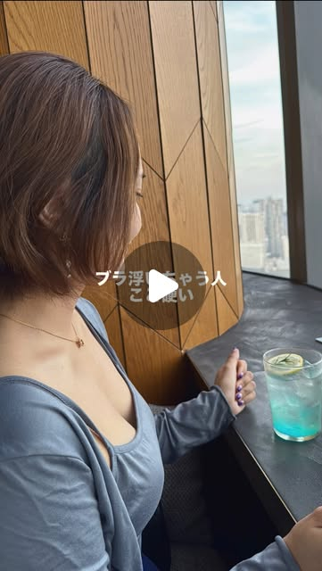
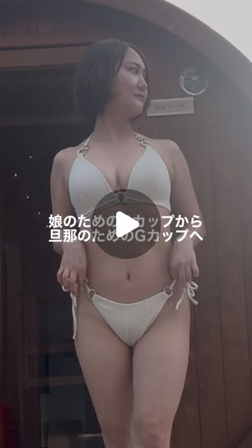

TOP / Posts
Posts
INSTAGRAM REEL
産後にしぼんだ胸も、正しいケアで変えられる。カオリ自身の経験から伝える回です。

肩の硬さとバストの土台の関係を、簡単なセルフチェックつきで紹介しています。
日々のトレーニングやケアの様子をリールで発信しています。
胸だけを見るのをやめて、全身の土台から整えるという考え方をまとめています。

痩せることだけがゴールじゃない。バストのメリハリまで考えるアプローチを紹介しています。
@アカウント名 をフォローする →